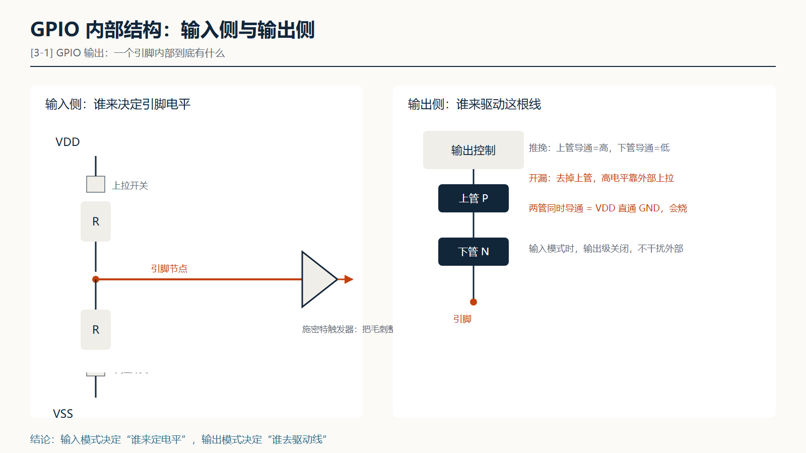

课程时长：约 34 分钟 | 深度版 | 配套结构图与看图理解
GPIO 是所有外设的“样板间”。把输出模式的配置流程吃透，后面 USART、SPI、TIM 的引脚配置都是同一套动作：开时钟 → 选模式 → 设参数 → 写数据。
这一节的难点不在代码，而在“模式选择”：同样一行 GPIO_Init，模式填错，代码不报错、现象却完全不对。
说出 8 种模式的适用场景
从电路结构解释推挽与开漏的差异
记住“开时钟—配模式—写电平”三步法
能算限流电阻、判断 LED 极性

图 2 GPIO 内部结构：左侧输入通路（上下拉 + 施密特 + IDR），右侧输出级（推挽两管 / 开漏单管）
左半张图回答“谁来定电平”：VDD 经上拉开关与电阻接到引脚，VSS 经下拉开关与电阻接到引脚，两者只有一个闭合；引脚电压经施密特触发器整形后写入 IDR。右半张图回答“谁去驱动线”：输出控制驱动上管 P 与下管 N。
把两侧对照记：输入侧是被动读，输出侧是主动写，模式寄存器决定哪一侧接通。开漏就是“把上管拿掉”，所以它永远无法主动输出高电平——这句话能解释后面所有开漏相关的问题。
浮空输入：外部已有确定电平，如串口 RX、外部上拉电路
上拉/下拉输入：按键，决定未按下时的默认电平
模拟输入：ADC 采集，数字部分必须断开
推挽输出：LED、蜂鸣器、继电器等需要主动驱动的负载
开漏输出：I2C、电平转换、多机共享总线
复用推挽/开漏：引脚交给片上外设，如 USART TX、SPI SCK、PWM
每个引脚在 CRL/CRH 里占 4 位：CNF[1:0] 选功能，MODE[1:0] 选速度。Pin0–7 在 CRL，Pin8–15 在 CRH。
写电平常用 BSRR：高 16 位置 1、低 16 位清 0，且写 0 无效，所以置位与复位互不干扰，是原子操作。
| 寄存器 | 作用 | 要点 |
|---|---|---|
| GPIOx_CRL / CRH | 引脚配置 | 每脚 4 位，速度 2/10/50MHz 对应 MODE=10/01/11 |
| GPIOx_ODR | 输出数据 | 整体写入，读改写可能被打断 |
| GPIOx_BSRR | 置位/复位 | 原子操作，只影响指定位 |
| GPIOx_IDR | 输入数据 | 输出模式下读它可检测引脚是否被外部拉低 |
RCC_APB2PeriphClockCmd(RCC_APB2Periph_GPIOC, ENABLE); /* 1. 时钟 */ GPIO_InitTypeDef g; /* 2. 模式 */ g.GPIO_Pin = GPIO_Pin_13; g.GPIO_Mode = GPIO_Mode_Out_PP; g.GPIO_Speed = GPIO_Speed_2MHz; GPIO_Init(GPIOC, &g); GPIO_ResetBits(GPIOC, GPIO_Pin_13); /* 3. 电平：低 */ /* 等价写法：GPIO_WriteBit(GPIOC, GPIO_Pin_13, Bit_RESET); */
LED 压降约 2.0V（红）/3.0V（蓝白）。目标 5mA 时 R=(3.3−2.0)/0.005=260Ω，取 220Ω 或 330Ω。
GPIO 单脚约 20mA，整片有总限额。电机、继电器、大功率 LED 必须加三极管或驱动芯片，不能直驱。
| 负载 | 典型电流 | 能否直驱 |
|---|---|---|
| 小 LED（5mA） | 5mA | 可以 |
| 蜂鸣器（有源） | 20–30mA | 不建议，加三极管 |
| 继电器 | 40–80mA | 不行，必须加驱动 |
| 直流电机 | 数百 mA | 不行，必须加驱动 |
引脚默认是 GPIO，要让 USART/SPI/TIM 接管，必须配成复用模式，并打开对应外设时钟。部分外设还支持重映射（AFIO），把功能挪到别的引脚上。
重映射后原来的 GPIO 功能失效，这一点在排查“为什么这个脚不受控”时经常被忽略。
为什么一个引脚要 4 位：CNF 两位区分功能（输入/输出/复用/模拟），MODE 两位区分速度或输入类型，组合出 16 种，实际常用 8 种。寄存器这样设计是为了让 16 个引脚共用两个字（CRL/CRH）。
为什么速度档影响功耗：MODE 越大，输出级的驱动能力越强、边沿越陡，瞬态电流也越大。点灯用 2MHz 足够，只有高速通信才需要 50MHz。
例：3.3V 驱动红色 LED（Vf≈2.0V），目标 8mA。R=(3.3−2.0)/0.008=162Ω，取标称 180Ω，实际电流 7.2mA，电阻功耗 I²R≈0.009W，1/8W 电阻足够。
若取 1kΩ：电流只有 1.3mA，灯会明显偏暗——这就是“电路没错但灯不亮”的常见原因。
| 错误写法 | 后果 | 正确做法 |
|---|---|---|
| 忘开 GPIO 时钟 | 配置写入无效，引脚不动 | 先 RCC_APB2PeriphClockCmd |
| PC13 配推挽输出高电平 | 灯不亮（低电平点亮） | 用 ResetBits 输出低 |
| 开漏输出不加上拉 | 读不到高电平 | 外接 4.7k–10k 上拉 |
| 用 GPIO 直驱电机 | 电流超标，烧引脚 | 加三极管或驱动芯片 |
推挽为什么不能并联：上管导通把线拉到 VDD，下管导通把线拉到 VSS。两个推挽输出一个高一个低，就是 VDD 经两个 MOS 直接到地，电流只受导通电阻限制——发热、烧管。所以共享总线必须用开漏。
开漏为什么必须上拉：开漏只有下管，输出高时下管关断，引脚呈高阻，没有任何器件把线拉到 VDD。没有上拉电阻，所谓“高电平”只是悬空，读出来是随机值。
万用表量引脚电压：推挽高应接近 3.3V，低接近 0V
开漏不外接上拉，量到的“高”是浮空值，以此验证高阻态
示波器对比 2MHz 与 50MHz 的边沿上升时间
| 现象 | 原因 | 解决 |
|---|---|---|
| 灯不亮 | 没开 GPIO 时钟 | 补 RCC 使能 |
| 灯常亮不受控 | 模式配成输入或引脚被复用 | 检查 Mode 与重映射 |
| 灯很暗 | 限流电阻过大 | 换 220Ω |
| 两个输出接一起发热 | 推挽对推挽短路 | 改开漏 + 上拉 |
| 开漏读不到高 | 没有上拉电阻 | 加 4.7k–10k 上拉 |
Q1. 推挽和开漏的本质区别？
A：推挽有上下两管，能主动输出高低；开漏只有下管，高电平靠外部上拉。
Q2. 什么场景必须用复用推挽？
A：引脚交给片上外设驱动时，如 USART TX、SPI SCK、PWM。
Q3. 为什么开漏可以多设备共享？
A：谁都不主动输出高，避免推挽对推挽短路，形成线与。
Q4. 输入模式下输出级在干什么？
A：输出级关闭，引脚高阻，不干扰外部。
Q5. BSRR 相比 ODR 的优势？
A：原子置位/复位，不会因读改写被打断。
Q6. 速度档位影响什么？
A：只影响输出边沿斜率与功耗，不影响逻辑电平。
Q7. 为什么输入模式也要配 Speed？
A：结构体字段必须给值，虽然对输入无效，但不能是随机值。
Q8. 复用功能为什么还要开外设时钟？
A：引脚由外设驱动，外设本身必须上电才能工作。
1. PC13 的 LED 为什么低电平点亮？
答：LED 阳极接 VCC、阴极接引脚，输出 0 才有电流。
2. 开漏能直接驱动 LED 吗？
答：能拉低点亮，但高电平需要上拉。
3. CRH 管哪几个引脚？
答：Pin8–Pin15。
4. 限流电阻怎么算？
答：R=(VCC−Vf)/I。
5. 为什么两个推挽不能并联？
答：一高一低会短路。
☐ 能默写三步法
☐ 能画推挽/开漏结构
☐ 会算限流电阻
☐ 理解 BSRR 原子性
☐ 知道复用模式何时用